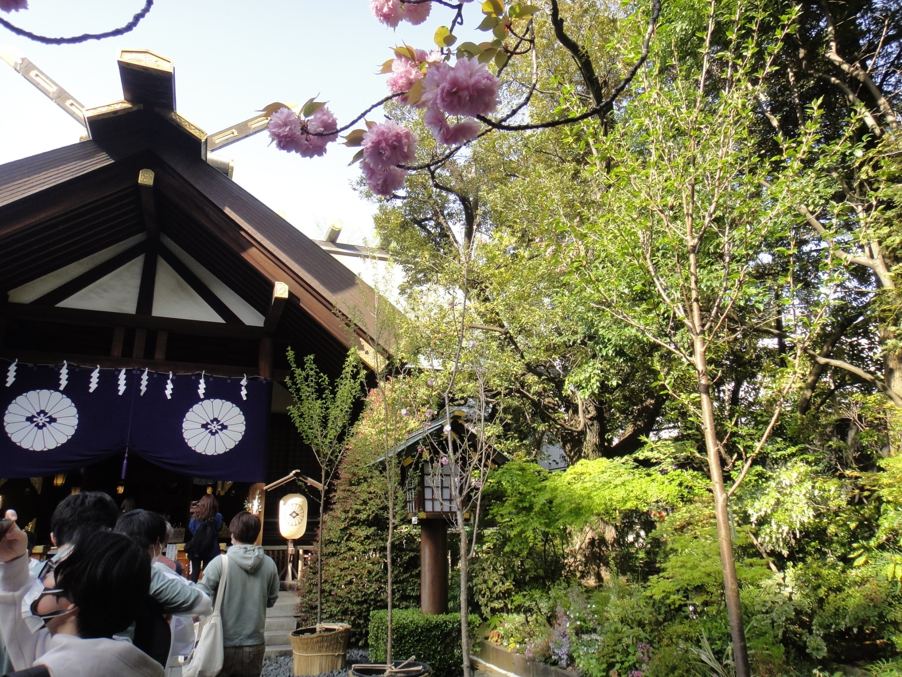
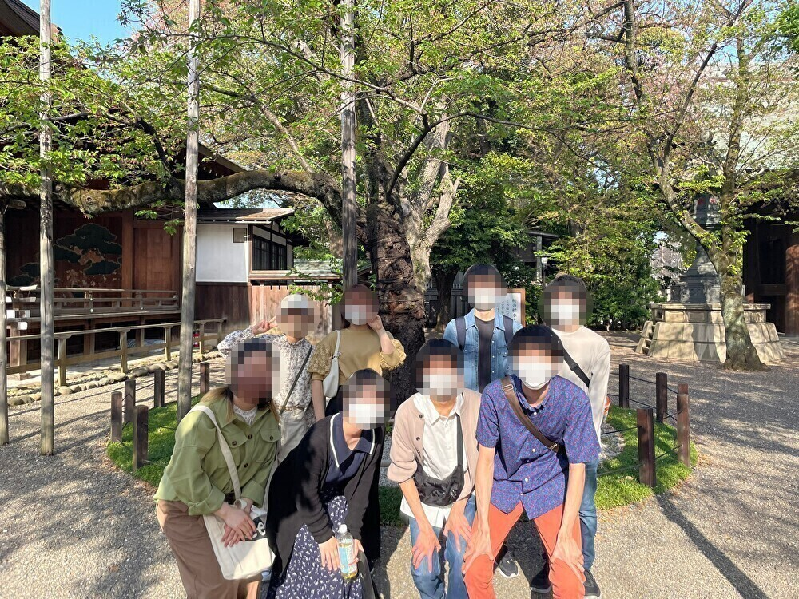

2022年度新歓散歩
～市ヶ谷キャンパス周辺編～
04/10 2022
カテゴリー：新歓散歩
新年度が始まり本散歩サークルも新歓散歩を開催しました。2022年度の新歓散歩では市ヶ谷キャンパス散歩編、上野公園散歩編、お台場周辺散歩編と3部作を予定しております(笑)
今回は第１回ということもあり、本拠地である法政大学市ヶ谷キャンパス周辺を散策してきました。
３月末は桜が綺麗だったのですが、私たちの散歩のタイミングでは桜が散ってしまい、少々残念。しかし、わが法政大学のボアソナードタワーは圧巻な景色です！
 続いて飯田橋方面に歩いていき、東京のお伊勢さんである『東京大神宮』へ訪れました。東京大神宮と言えば”縁結びのご利益がある”として有名スポットとして君臨しています(笑)
東京都心のオフィス街にある東京大神宮は都会のオアシスとして素敵なスポットだなあと感じる今日この頃です。
続いては靖国神社です。靖国神社からわが法政大学のボアソナードタワーが見えるのは誇らしいですね。ちなみに1年生の時の体育では靖国神社の近くを散歩するのですが、コロナ禍が続くため、今年度は体育で散歩はあるのでしょうか？…
新歓散歩はまだ始まったばかりですが、今後の散歩活動はもっと盛り上がってきます！ ご興味のある方は是非TwitterのDMへご連絡下さいませ～♪
← 次の記事 前の記事 →